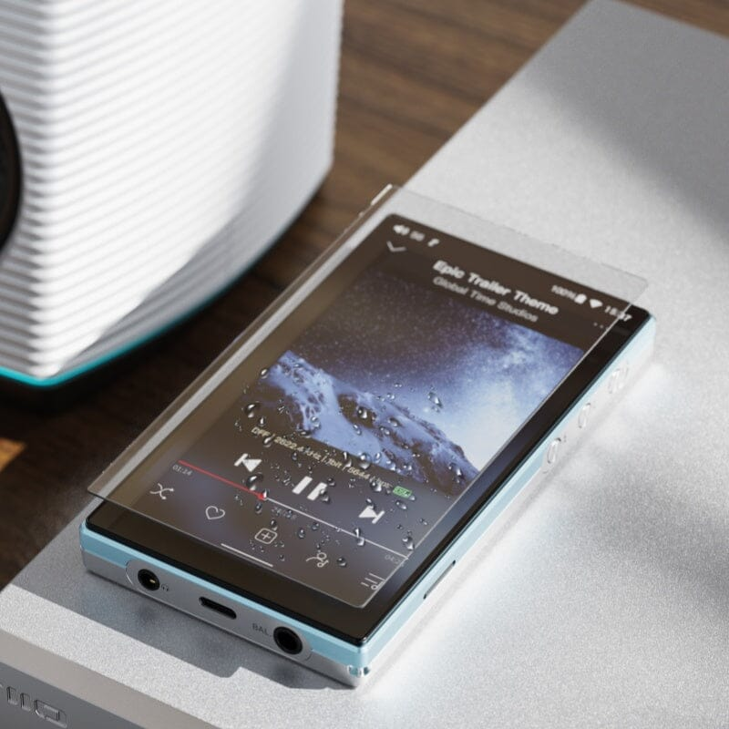
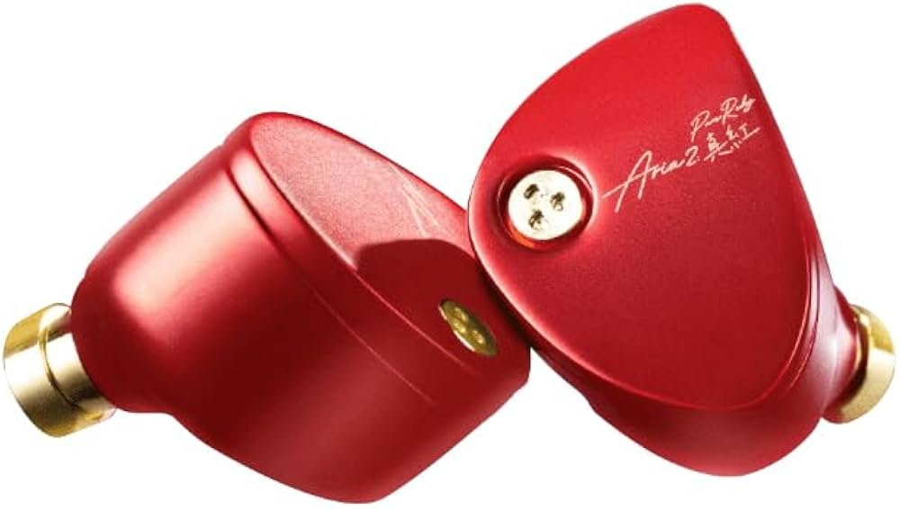

🎧 Setup Audio Harian

FiiO JM21
Digital Audio Player (DAP)
Source andalan. Suaranya bersih, UI responsif, baterai awet.

Aria 2 Red
In-Ear Monitor (IEM)
Karakter suaranya asik buat berbagai genre. Bass punchy dan detail.
UI/UX Enthusiast & Audio Gear Lover.

Digital Audio Player (DAP)
Source andalan. Suaranya bersih, UI responsif, baterai awet.

In-Ear Monitor (IEM)
Karakter suaranya asik buat berbagai genre. Bass punchy dan detail.